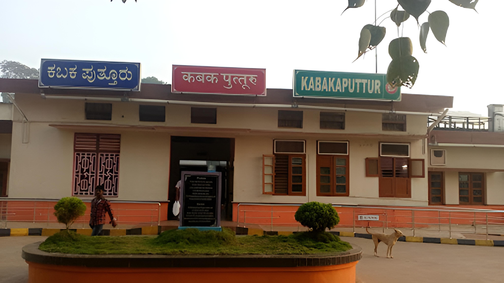
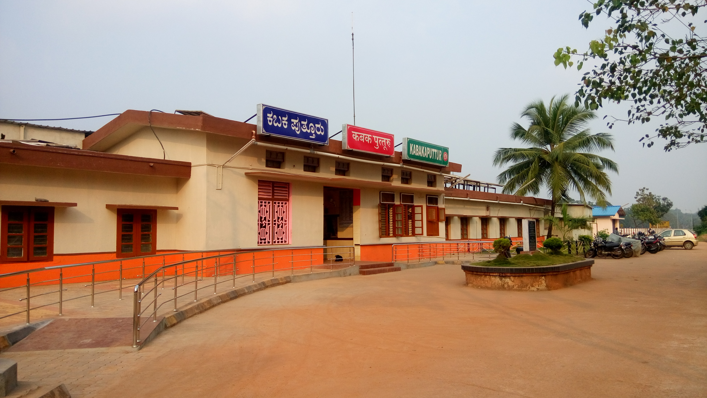
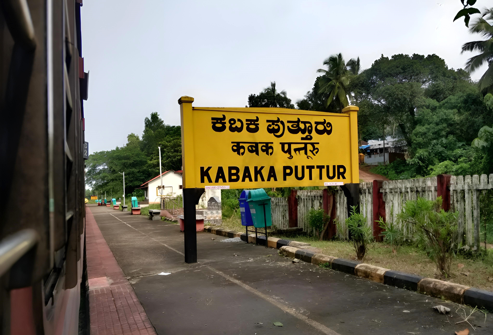

RAILWAY STATION
KABAKA PUTTUR RAILWAY STATION
Kabaka Puttur is a major railway station on Mangalore–Hassan–Mysore line. It is located in Padil,Puttur, Dakshina Kannada district, Karnataka state, India. It consists of two platforms. It is named after two places: Kabaka which is 5 km away from railway station location and Puttur where railway station lies. The railway station lies 1.2 km away from Puttur KSRTC bus stand and 1.1 km away from Puttur–Uppinangadi Main Road.
   click here to visit